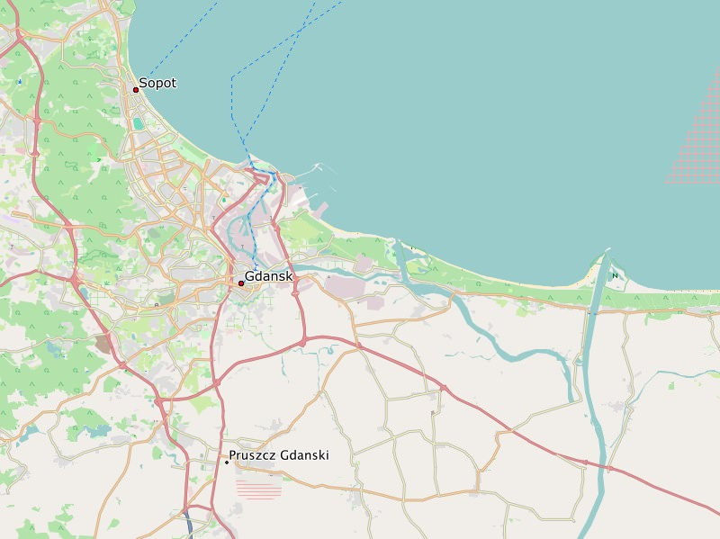

Danzig - der Name der Stadt ist abgeleitet aus der mittelalterlichen Bezeichnung für "gotische Schanze".
Garmin GPS-Gerät: Polen - Installationsimage für Micro-SD-Karte (0.3 GB):
DownloadMicrosoft Windows: Polen - Installationsarchiv für Garmin BaseCamp (0.3 GB):
DownloadApple Mac OS X: Polen - Installationsarchiv für Garmin BaseCamp (0.3 GB):
DownloadAlle Betriebssysteme: Polen - Imageverzeichnis für QLandkarte (0.3 GB):
DownloadViel Freude an den Freizeitkarten ... und viele interessante Touren damit.